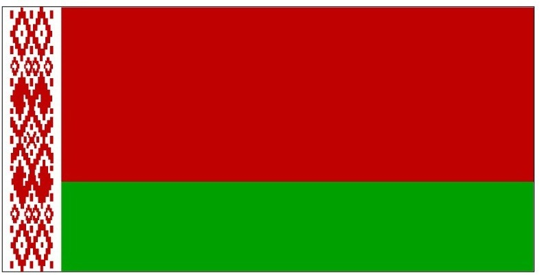

위로부터 빨강과 초록이 2:1 비율로 배치되엇고 깃대 쪽에는 하양띠는 바탕에 전통문양으로
된 수직띠가 있다 하양띠는 기 가로의 1/9 길이이다
전통무늬는 풍부한 문화적 유산과 그것의 정신적인 계승 ,국민의 단합을 나타내며,
빨강은 이 나라의 지나간 시대의 영광을 ,초록은 미래 .희망.봄.부흥.산림 .들판을 상징한다
가로세로 비율은 2:1이다
1918년과 1991~1995년 동안은 위로부터 하양.빨강.하양의 전통적인 3색기였으나
1995년 실시한 국민투표에서 75.1%의 찬성으로 현재의 기로 결정되었다
벨라루스 국가
1절
우리는 벨라루스인, 평화로운 사람들
우리의 마음은 우리의 고향으로 향하리.
우리는 깊은 우정을 간직하고 우리의 힘을 얻으리.
근면 속의 자유로운 가족이여.
후렴
우리 조국의 빛나는 이름에 영광을,
우리 국민들의 형제로운 화합에 영광을!
우리가 사랑하는 모국,
영원히 번창하라, 그대는 벨라루스라네!
2절
우리의 형제들과 함께, 수백년 동안 우리는
용감하게 우리의 보금자리의 경계를 지켰네.
자유와 우리의 운명을 위한 전투들에서
우리는 승리의 깃발을 쟁취했다네!
후렴
3절
사람들의 우애는 그들의 힘이며
그것은 우리의 성스러운 빛나는 길이라네.
맑고 푸른 하늘을 자랑스럽게 날아라,
승리의 깃발이여, 태양의 깃발이여!
후렴
벨라루스 국명
벨라루스라는 국명은 하얀 루스(벨라루스어: Белая Русь 벨라야 루스)라는 표현에서 왔다.
러시아 제국 시절에는 러시아어로 벨로루시야(Белоруссия, Belorussia)라고 불렀다.
또, 대한민국에서는 이로 인해 한때 백러시아(白러시아)라고도 불렀다. 하지만, 실제 벨라루스는 White Ruthenia 를 의미한다.
1991년 9월 19일 당시 벨로루시 소비에트 사회주의 공화국 소비에트 최고회의는 러시아어 국명을 Республика Беларусь (Respublika Belarus'),
줄여서 Беларусь (Belarus')로 표기하며 다른 언어로 표기할 때에도 이 발음을 따르도록 한다는 내용의 법을 고시하였다.
이에 따라 영어 국명도 Belorussia에서 Belarus로 바뀌었다.
대한민국에서는 1991년 12월 10일 정부·언론 외래어 심의 공동위원회 제2차 회의에서 이 국명을 벨로루시로 표기하기로
결정하였으나 벨라루스 정부의 요청에 따라 2008년 12월 11일 제82차 회의에서 표기를 벨라루스로 수정하였다.
러시아 제국과 소련 시절에는 현 벨라루스 지역을 가리키는 말로 '하얀 러시아'라는 뜻으로 백러시아라는 명칭을 쓰기도 했다. 벨라루스를 이를 때 '하얀 러시아'라고 직역되는 명칭을 흔히 사용하는 경우로는 독일어의 바이스루슬란트(Weißrussland), 네덜란드어의 빗뤼슬란트(Wit-Rusland), 그리스어의 레프코로시아(Λευκορωσία) 등이 있다.
그러나 루시(Русь)와 러시아는 구별되는 개념이며 백러시아라는 명칭은 역사적으로 벨라루스 외에 다른 의미로도 사용된 적이 있어 오늘날에는 백러시아라는 명칭을 거의 잘 사용하지 않는다.